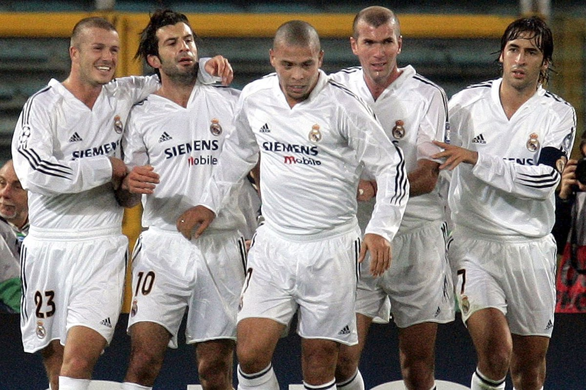

Pada bulan Juli 2000, Florentino Pérez terpilih sebagai presiden klub. Dia berjanji dalam kampanyenya untuk menghapus utang klub sebesar 270 juta euro dan memodernisasi fasilitas klub. Namun, janji pemilu utama yang mendorong Pérez untuk kemenangan adalah penandatanganan Luís Figo. Tahun berikutnya, klub mendapat tempat pelatihan yang rezoned dan menggunakan uang itu untuk memulai perakitan sisi Galáctico terkenal termasuk pemain seperti Zinedine Zidane, Ronaldo, Luís Figo, Roberto Carlos, Raúl, Fabio Cannavaro dan David Beckham. Hal ini diperdebatkan apakah berjudi terbayar, karena meskipun Liga Champions UEFA dan Piala Interkontinental menang pada tahun 2002, diikuti oleh Liga pada tahun 2003, klub gagal memenangkan trofi besar selama tiga musim berikutnya. Pada musim panas 2003, setelah menangkap lain gelar La Liga, Florentino Pérez dan dewan direksi menolak untuk memperpanjang kontrak pelatih Vicente del Bosque dan setelah perselisihan internal yang memaksa kapten Fernando Hierro meninggalkan klub. Mereka juga mengabaikan permintaan Claude Makélélé tentang kontrak baru dengan gaji yang lebih baik, sebagai imbalannya, Makélélé meminta permintaan transfer, dan dipindahkan ke Chelsea.
Beberapa hari setelah meraih gelar dari liga, dikelilingi dengan kontroversi. Pertama keputusan yang kontroversial datang ketika Perez memecat pelatih Vicente del Bosque, setelah direktur olahraga Real mengklaim bahwa del Bosque itu bukan orang yang tepat untuk pekerjaan itu, mereka ingin seseorang muda untuk menggoyang tim. Atmosfer buruk berlanjut ketika legenda Real serta kapten Fernando Hierro meninggalkan klub setelah perselisihan dengan manajemen, seperti yang dilakukan Steve McManaman. Namun, klub melakukan tur Asia di pra-musim dan memperkenalkan pemain baru David Beckham. Perez dan direktur menolak untuk memperbaharui kontrak Claude Makélélé dengan gaji yang lebih baik, menjengkelkan Makélélé yang meminta transfer, akhirnya pindah ke Chelsea Pada hari-hari terakhir jendela transfer, Fernando Morientes meninggalkan klub dipinjamkan ke Monaco. Real Madrid, yang baru mengangkat dengan pelatih Carlos Queiroz, mulai liga domestik mereka perlahan-lahan setelah menang telak atas Real Betis.
Musim 2005-06 dimulai dengan janji beberapa pemain baru - Julio Baptista (€20 Juta), Robinho (€30 Juta) dan Sergio Ramos (€30 Juta - Melepas Klausul) - tetapi pelatih asal Portugal itu tidak dapat menemukan formula yang tepat di lapangan sebagai bentuk miskin Real Madrid melanjutkan, dengan tim memukul titik terendah setelah kekalahan memalukan 0-3 di tangan Barcelona di Santiago Bernabéu. Luxemburgo akhirnya akan mengundurkan diri dan penggantinya adalah Juan Ramón López Caro, secara resmi manajer Real Madrid Castilla. Sebuah untuk kembali membentuk datang tiba berhenti setelah kalah dalam leg pertama perempat final Copa del Rey, 6-1 untuk Real Zaragoza. Tak lama setelah itu, Real Madrid tersingkir dari Liga Champions untuk musim keempat berturut-turut, kali ini di tangan Arsenal. Pada tanggal 27 Februari 2006, Florentino Pérez mengundurkan diri.


 +6285799982916
+6285799982916
 RIZQI ZULFA FAUZY
RIZQI ZULFA FAUZY